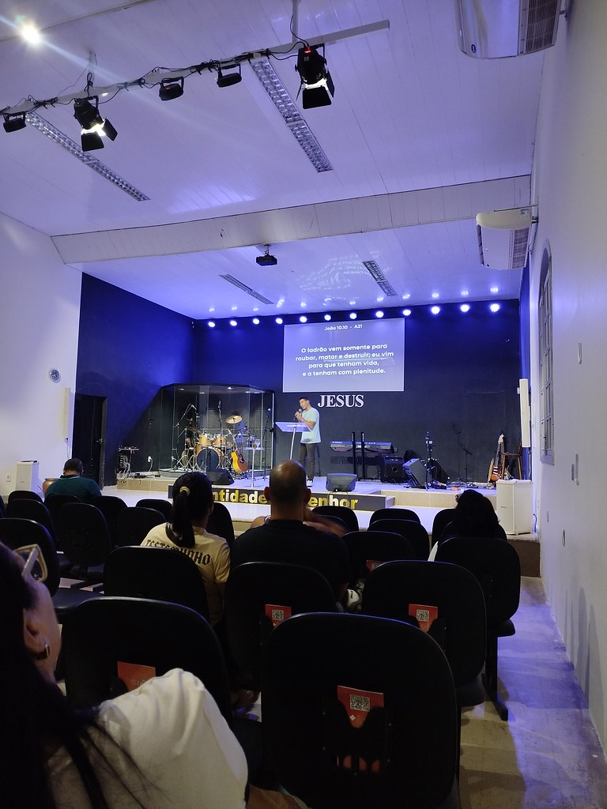
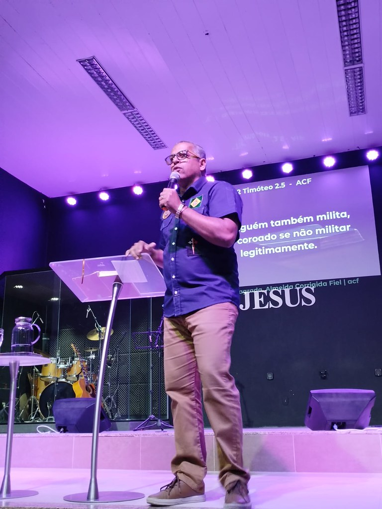
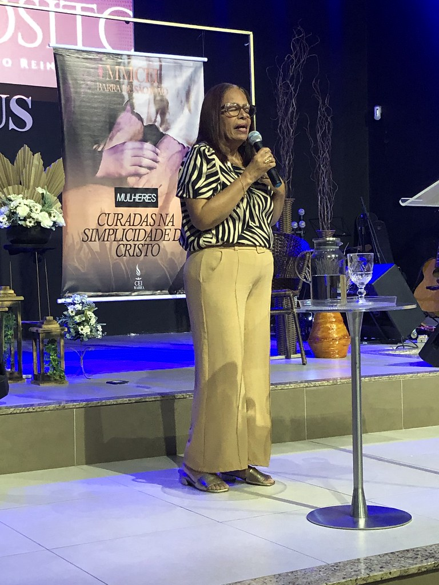
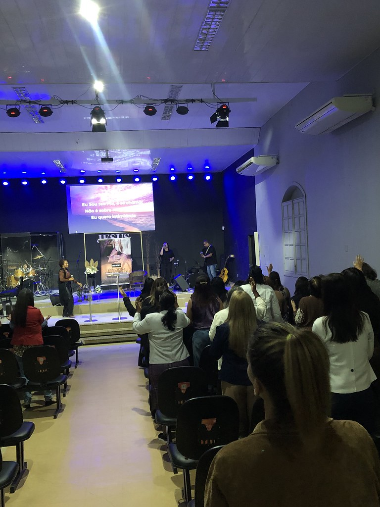
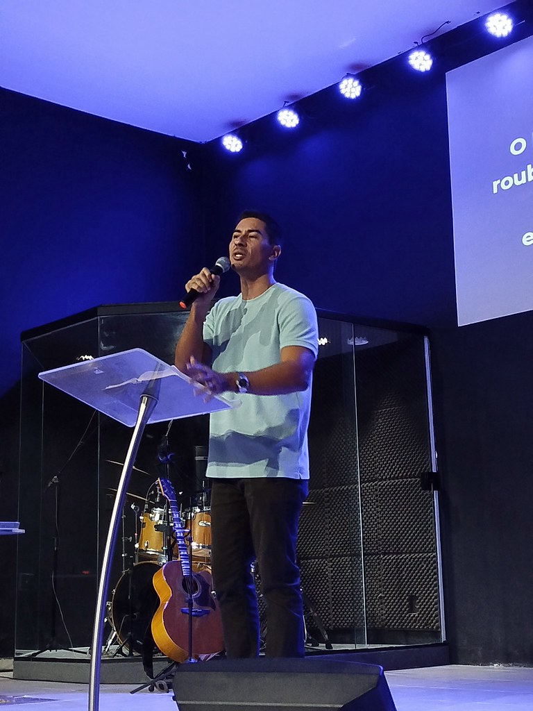

Uma comunidade para pertencer.
Um lugar para viver a fé, crescer na Palavra e caminhar em comunhão com pessoas reais.
Um lugar para pertencer, crescer e caminhar junto.
A CEI Barra é uma igreja do Centro Evangelístico Internacional em Barra de São João. Aqui, a presença digital serve a uma ideia simples: facilitar o primeiro passo e aproximar pessoas da comunidade.
Conteúdo que orienta e fortalece a caminhada.
Encontros que criam vínculos e novas histórias.
Um caminho claro para quem está chegando.
Encontre o seu jeito de se conectar.
Você pode começar pelo que faz sentido hoje: conhecer o espaço, enviar um pedido ou acompanhar os canais oficiais.
Planeje sua visita
Endereço e rota em um só lugar para chegar com tranquilidade.
Como chegar ↗Peça uma oração
Um espaço acolhedor para compartilhar aquilo que está no seu coração.
Enviar pedido ↗Acompanhe de onde estiver
Instagram, YouTube e galeria reunidos para manter você por perto.
Ver canais ↗Veja o que acontece por aqui.

Palavra
Encontros
Comunidade
MomentosVocê não precisa caminhar sozinho.
O que você gostaria de compartilhar?
Escreva com tranquilidade. Este espaço foi criado para facilitar um contato sincero.
Seu pedido foi preparado.
Obrigado por confiar esse momento à CEI Barra.
A sua primeira visita começa aqui.
Você não precisa saber tudo antes de chegar. Aqui estão as informações essenciais para encontrar a CEI Barra.
Continue perto, mesmo de longe.
Escolha por onde acompanhar a CEI Barra e fique por dentro dos próximos momentos.
Antes de chegar.
Informação clara deixa o primeiro passo mais leve.
Onde fica a CEI Barra?⌄
Na Rua Aristóbulo Pelodan, 499, em Barra de São João, Casimiro de Abreu/RJ. Você pode abrir a rota diretamente pelo Google Maps.
Quais são os horários dos cultos?⌄
A programação deve ser confirmada com a liderança. Para acompanhar os horários e avisos mais recentes, veja o Instagram oficial da CEI Barra.
Posso enviar um pedido de oração?⌄
Sim. O formulário desta página foi pensado para facilitar esse contato de forma simples e acolhedora.
Como posso acompanhar a igreja de longe?⌄
Você pode acompanhar os canais oficiais no Instagram, YouTube e no acervo de fotos.
Um lugar para viver a fé.
Quando você estiver pronto para conhecer, a porta está aberta.